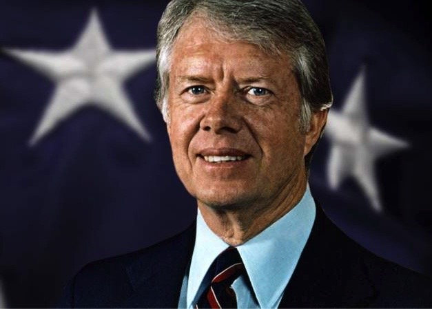

Many notable Phi Kappa Phi members have gone on to make substantial societal
advancements in their areas of research, community engagement, and/or have emerged as recognizable
leaders in their respective professional fields.
Text
Public Service
Jimmy Carter
Robert Gates
Ruth Bader Ginsburg
Mitt Romney
Text
Science & Scholarship
Rashid A. Abdu
Bernard A. Harris, Jr.
Christina Hammock Koch
Claude Shannon